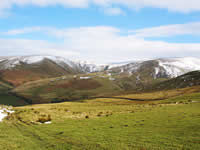
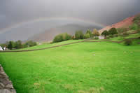
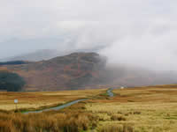
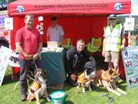

Cumbria and Lake District Weather
 |
 |
 |
When planning that all important trip to the Lake District, you are advised to check the local weather forecast. The Lake District is one of the most picturesque places on earth come rain or shine, but, "come rain", it does! But, there is always plenty to do and and see even in wet weather; a fact borne out by the many who flock to our area whatever the conditions.
If your plan is to climb or walk the fells and mountains, please be aware that cloud and mist can descend quickly, and transform a clear view to one where a sense of direction is easily lost. It is essential to have the appropriate clothing and footwear, and carry with you, waterproofs, hat, gloves and a torch. ( yes, even in summer )
Know how to read your compass and map, and include an adequate supply of food and drink.
Advise someone, not going with you, of the route you are taking, and the time of your intended return. And, ideally, have some knowledge of first-aid.
However, be assured that we do have lovely sunny days in which the full grandeur of the area is on display to those high in the fells, and those on the country lanes or by the lakesides. Come and see for yourself, and please, stay safe.

Spare a thought for the brave Lake District Mountain Rescue teams.All the rescue teams are unpaid volunteers on call every day and night of the year and operate without any Government subsidy or grant.
For daily weather forcasts, keep yourself informed by visiting the Lake District National Park Weatherline:
www.lakedistrictweatherline.co.uk
Phone: +44 (0)844 846 2444
Or alternatively, a 24-hour Lake District Weatherline Service is available on 017687 75757.